The Kingdom

The year is 354. It is that long since the Kingdom was formed.
Amar is a fairly peaceful kingdom.
It is a stable society and its problems are mostly predictable. Local surprises do occur, quite frequently, but the overall state of affairs are stable.
Nobody really cares anymore that they are in fact trapped by a fog - few nautical miles off the cost. Any escape to the east or south is futile - the fog will return any sailor to the point he entered it. The swamp and the Araxi forest block the west. The dwarves and their mountains alienate the north.
But escape? Why? The kingdom of Amar is the best conceivable place to live. Nothing is missed. Everyone has ample opportunities and life is lived to its fullest. There is no reason to wish for anything else...
Things are at its usual, somewhat slow pace. The dwarves are going about their own business and the trade with the humans are beneficial to both. Mostly, the humans sell food, wine and clothes to the dwarves. In exchange, they get metals, weapons, armour and jewellery. Dwarven weapons and armour is of higher quality than those made by humans. The relationship between the two races is cordial.

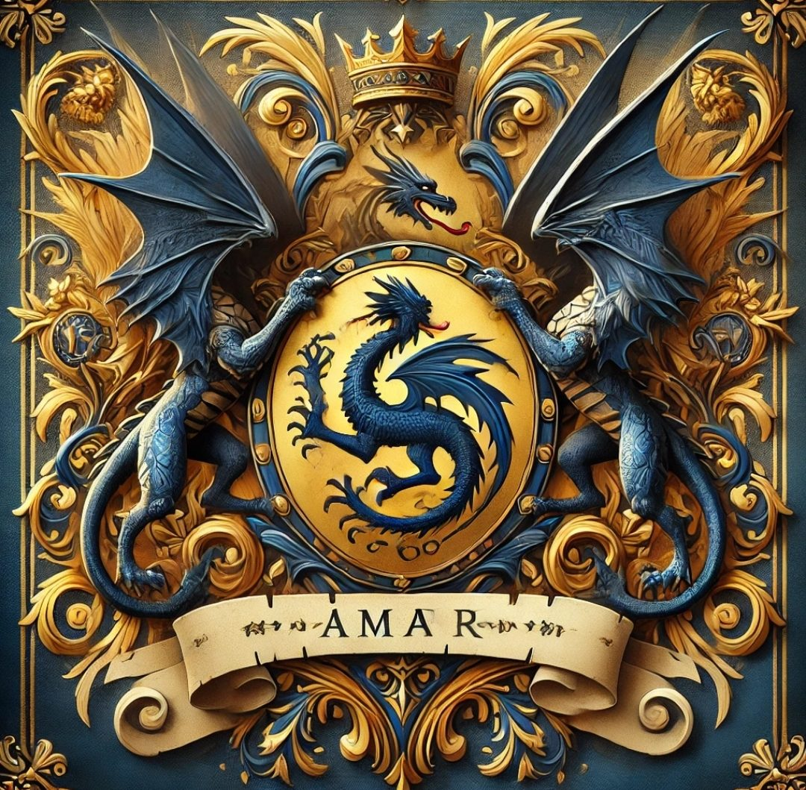
The King is the ruler of the kingdom. The Queen is the kingdoms spiritual magistrate. The Commander (of the army) is the highest military leader under the King. There are 5 Barons, one for each district (except for Amaronir where the King is also the direct acting power) and surrounding districts.
Some villages and areas have a Lord of Land as principal. There is no slavery, but some peasants are so tied up to their Lord of Land or Baron that they are considered bound people. The nobility also embraces the Lords not owning any sizeable portion of land. Their titles cannot be inherited. Those religions that give the title of Lord to high ranking members do so in coordination with McGillan or Gwendyll and they are thus automatically initiated into these religions as well. All nobles are initiates of McGillan or Gwendyll, it goes with the title. The close family of a noble is considered nobles themselves unless the noble is without land.
In Amaron the King has delegated the daily city affairs to the Moltan Lord Thainir Laidhos (a cousin of the King). Lord Thainir Laidhos is looked upon as the Mayor of Amaron. He is directly responsible for law and order of the Capital.

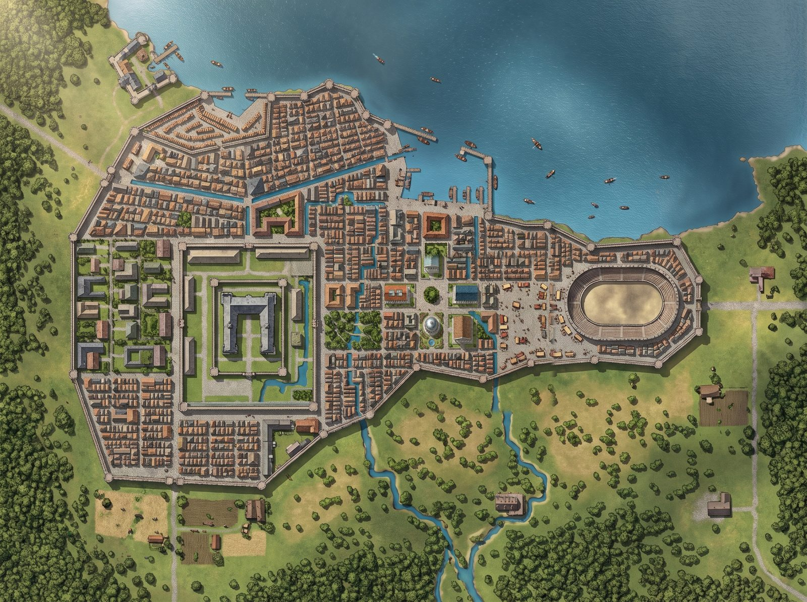
The human kingdom totals somewhat more than 50.000 humans. About 900 of these are nobles.
The postal service is run as a service under the King. He does the overall setting of kingdom policy and laws. He governs the state affairs and do not mingle with his juniors matters. He is to elevated for that. The local principals are responsible for local policy and local law and order.
The main religions are: Walmaer, Shalissa, Anashina, Alesia, Taroc and Juba. The nobles of course worship McGillan and Gwendyll. There are priests and other principals of most of the religions. Man Peggon and Elesi are extinct and considered cursed. No one knows why that is. Mestronorpha and Maleko is also considered cursed or just a "no". Moltan is worshipped by the upholders of law and order and no one else. Kraagh is a somewhat shun cult - the worshipers are mostly lonely undertakers.
The border against the Araxi is turbulent and the soldiers guarding the border are mostly Taroc initiates or non-religious.
In the kingdom, there are other important groups. Like "The Calah". This is an underground rebel movement with a shady reputation.
They are often caught in subversive acts to undermine the King's power or even overthrow him. Since many of the members are wanted by the law, they are confined to stealing for a living. This strengthens their bad reputation. Many are also Tzankili worshippers. They are sometimes friends with the Cloaks, sometimes enemies - depending on the place in the kingdom.
Another is "Dark Dagger" - the assassins. They are hired for sinister purposes by anyone who has the money to pay for it. In the cities, people have a legitimate fear of the dark - you can at any time be taken out by a Dark Dagger member. Either if you have a wealthy enemy without scruples or if you have offended a member in some way. They are rumoured to be Kraagh and Mestronorpha worshippers.

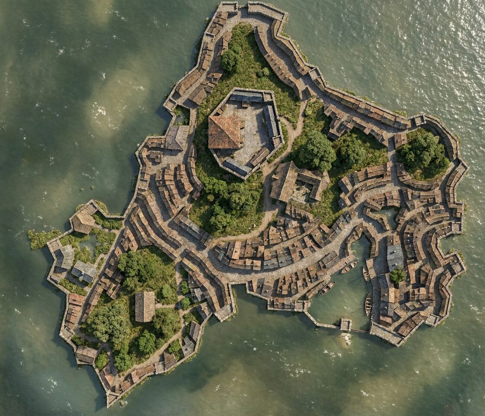
Then there are the thieves, known as "The Cloaks". They are the thieves’ guild and function truly as a guild. Anyone who tries to operate as thief without their consent are paid a visit and "convinced" to become a member - or scram. Many thieves are not in the guild, so the Cloaks have a backlog of "roamers" to handle. Some are Calah, although the Cloaks usually leaves them alone. There is a link between the Cloaks and some group of magicians and who deploy them for special purposes. The Cloaks are mostly Tzankili worshippers.
Magick in Amar
Magick is not very common in the Kingdom. Only one out of 50 has Magical Aptitude (MA) and only one out of three with MA has a Womp. Of those who have a Womp, 50% has learned one or more spells.
The Magick Circle is the Kings main advisor. The Circle is made up of 8 wizards. The leader is called The Rai and is a great summoning magician. He is known by that name, but few know what his powers are good for. Most think of him as the wizard of all wizards. The other 7 are also very powerful - mostly in summoning, but also in other magick paths.
There are between 300 and 400 citizens skilled in magick on Amar. There are wizards, alchemists, witches and necromancers. Most of the groups of magicians, whether wizards or witches view the Circle with respect and seldom challenge them or cross their path.
In the capital Amaron, magick is taught at the famous Academica Magicka. The students study all magick paths except Black Magick as it is banned by the King. The academy is supervised and its students graduated by the Circle.
The major principals
King Caolain II (300) and Queen Fiona (309) are the principals of the human kingdom. The King is a Walmaer worshipper and the Queen is a Shalissa priestess. The princess, Ianira (331) is a Ielina initiate and working towards becoming a priestess. The prince, Vaiangor (333) is a sporty guy and has Recolar as his idol.
The King is big and sturdy, somewhat rude but still trying to be elegant. He speaks loudly and commanding. He hates opposition and gets irritated when people don’t obey. The King is very stubborn and never does what others tell him to. He will however most likely do it if someone challenges him. He loves food and women even though he does his utmost to remain ethical and true to his wife. He has a score of close followers, advisers and personal guards.
The Queen is a very elegant lady. She is very religious and quite spiritually aware. She is in good communication with the prince and princess.
The Prince is the next king of the kingdom. He is quite disinterested in the political affairs, though. He is more interested in sports, his friends, flirting with girls and partying. He is looked upon as the healthy idol of the kingdom.
The princess is very much into the arts. She is an eminent singer, a well accepted painter and poet as well as a flute player. She is in very good communication with her mother. She hardly speaks with her father.
The Commander, Seillan Torthal looks like a big brute but is really a calm, silent and fair guy. He is an awesome Taroc warlord - the very icon of Amar's Taroc worshipers.
The districts and cities
There are six major districts in the kingdom. They each have a capital city where the baron (or in the case of Amaron, the King) resides.

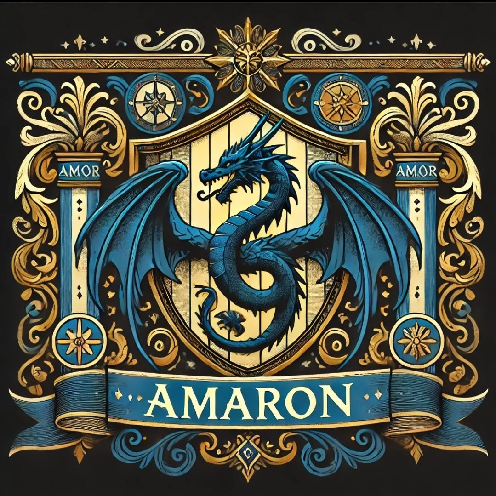
Amaronir: Capital city Amaron (population 13000 + 5000 in areas surrounding the city). Amaronir is the richest district as it holds the capital of the kingdom. The King is easily the richest person in Amar - he is on top of the tax collection hierarchy.
Amaronir holds the most nobles of an of the six districts. Around half the nobles have residence here - most of them within the city. The citizens of Amaron are seen as a bit arrogant and aloof. The Amarons have a tendency to view others as lazy peasants.
Amaron is a busy city. Merchants from all over the kingdom comes to the capital to trade. The city is relatively safe. The main Moltan temple is in Amaron. Also Academica Magicka is located here.
The great Coliseum to the honour of Recolar, the god of sports and son of Taroc, is located in the capital. The big gladiator events are held here as well as horse races and athletic events.
Tsenkir, the largest village i Amar (population 500) lies within the district borders of Amaronir. This is the most important place of trading in the kingdom. Lord Nalchir Emaron is himself an important trader.

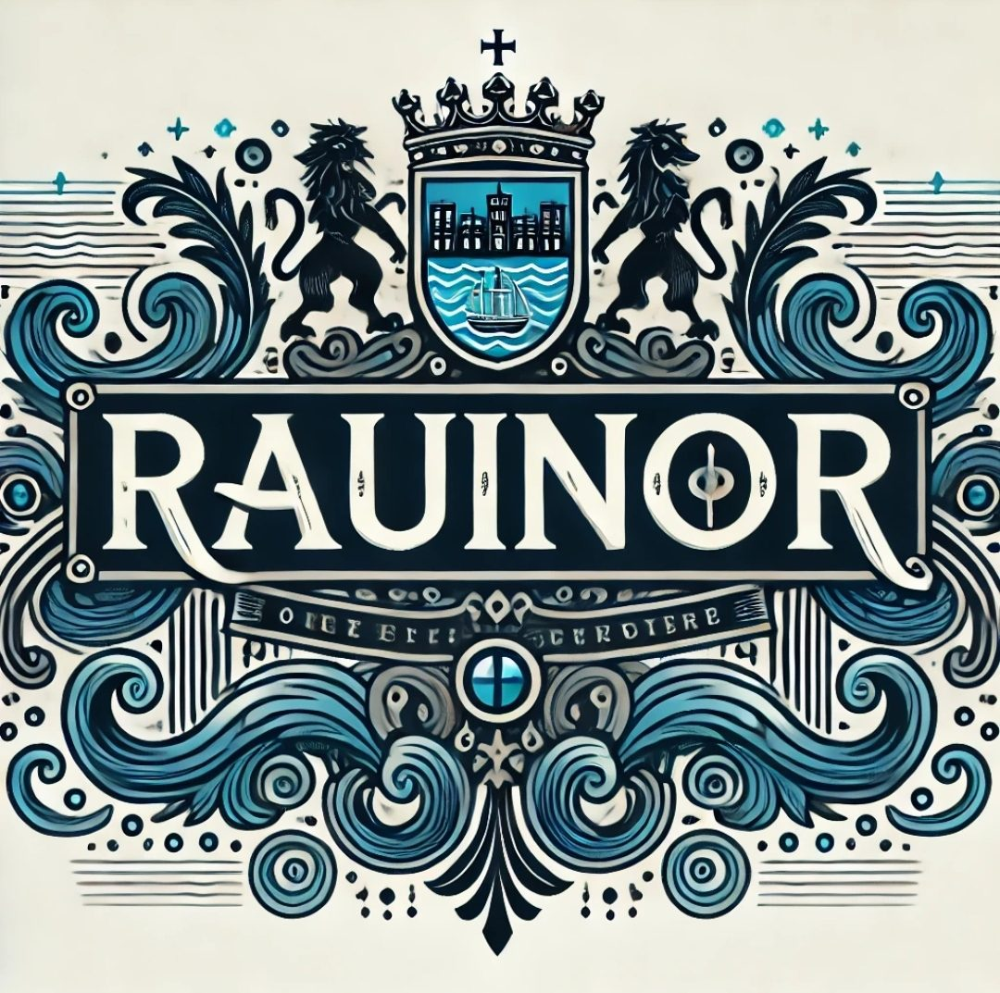

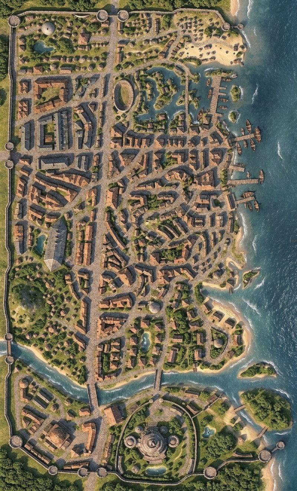
Rauinir: Capital city Rauinor, the "Walmaer capital" (population 9000 + 3000). Ruled by Baron Fer Chalun, a Walmaer Lord and eager fisherman. He is said to commune with the fish and command the waters. He doesn't meddle with political affairs much. The biggest Walmaer temple lies in this city - run by the High Priest Larosmarot, a very clean and proper Walmaer Priest.
Rauinir mainly deals in fish and seafood. Some trading in amber with the dwarves and other cities. The area serves as a holliday resort for the rich citizens of Amaronir. The wealthy part of Rauinor contains many glamorous buildings.

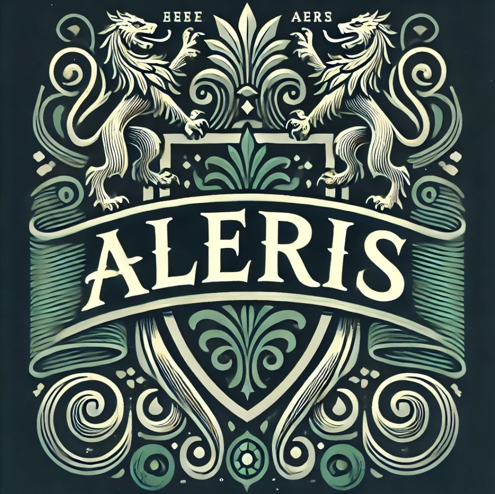

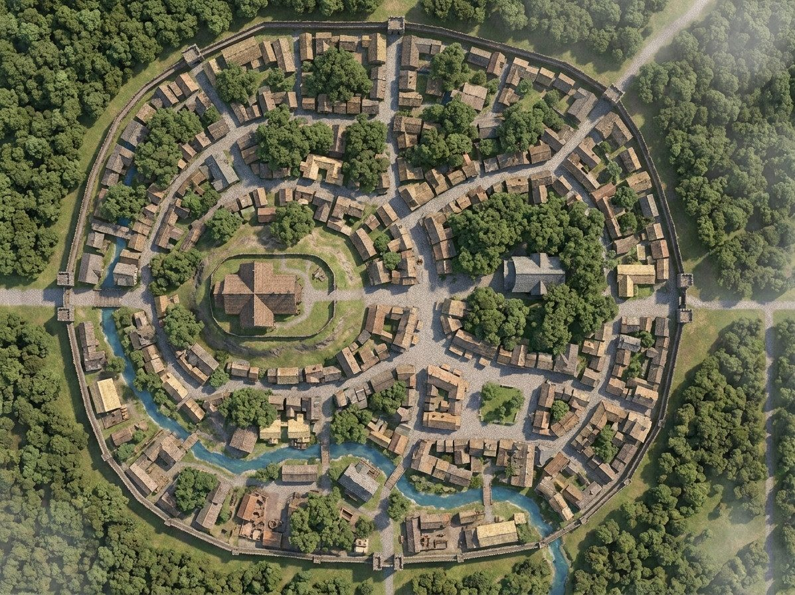
Aleresir: Capital Aleris (2000 + 1000) is the smallest of the district capitals. The district is also the least populated.
Aleresir is marked by the many worshipers of Anashina. It has much woods and forests, faeries are often seen here.
Lady Serena Chiall is the principal of the district. She is a young, single Anashina priestess with a strong belief in personal freedom. She is a bit of an anarchist, much to the dismay of the King. There are stricter rules on the use of magick in Alerisir than most other districts. Magicians need an official certification in order to practice their magick.
Alerisir trades in fur, horses and household animals.

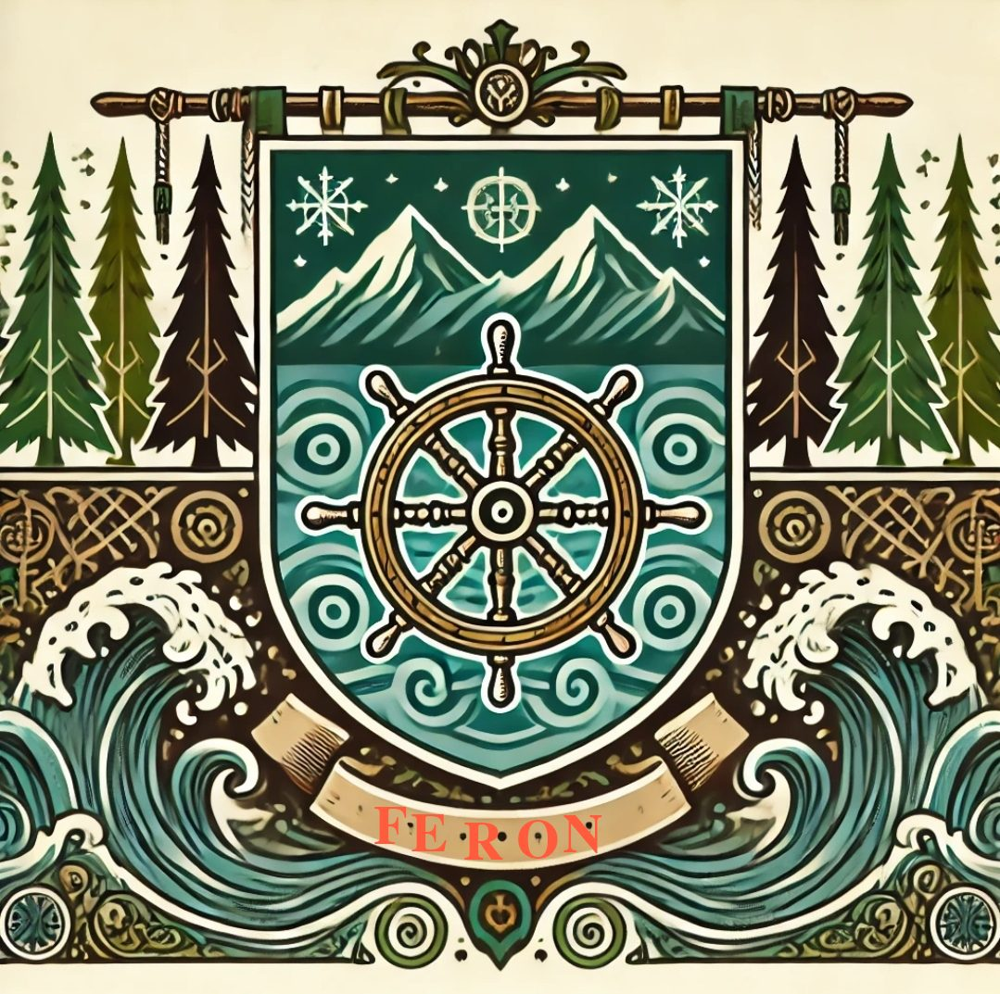

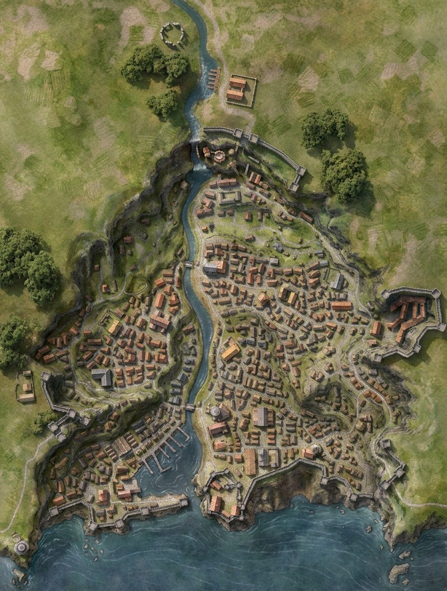
Feronir: Capital Feron (2500 + 1000). Ruled by Baron Garos Maella, an Ex-Moltan Initiate, now a self-proclaimed ruler, judge, jury and executor. A very strict Baron with a firm grip on the local laws. His right hand is an offbeat Moltan priest, Moltar the Just.
Feron is the strictest city on Amar. The guards are given the power to judge and to execute. They are themselves penalized (by the wrong judgement they gave) whenever they are caught giving an unjust sentence.
Feronir trades in fruit, spices and pearls.

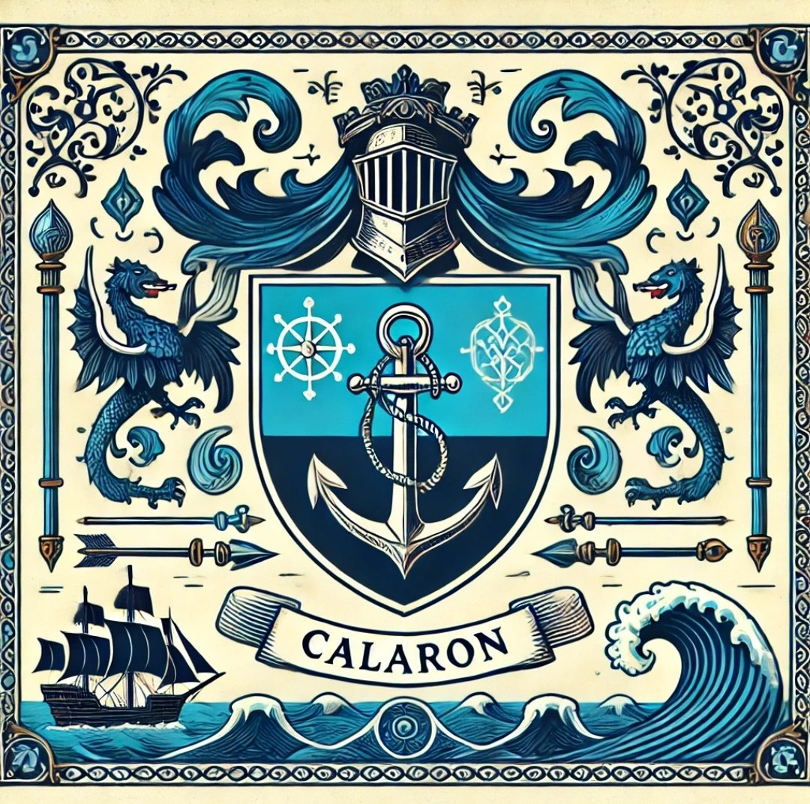
Calaronir: Capital Calaron (6000 + 3000). Ruled by Baronesse Fienna Milin, The King's cousin. She is a determined Baroness, respected and very strict in her ruling. She is rumoured to have strange magickal powers. Some say she is grey at best. This may be the answer to the constant bad weather covering the city. Others claim she is the target of jealous competitors for her title... her brother, and that this fight is burdening the city.
The use of magick is prohibited inside the city walls. There are very few exceptions made to this policy, one of which is the notorious Perception wizard Kiro.
The thieves guild is strong within Calaron. This accounts for the label "City of Thieves".
Calaron trades in fish. It also has a large farming community outside the city.

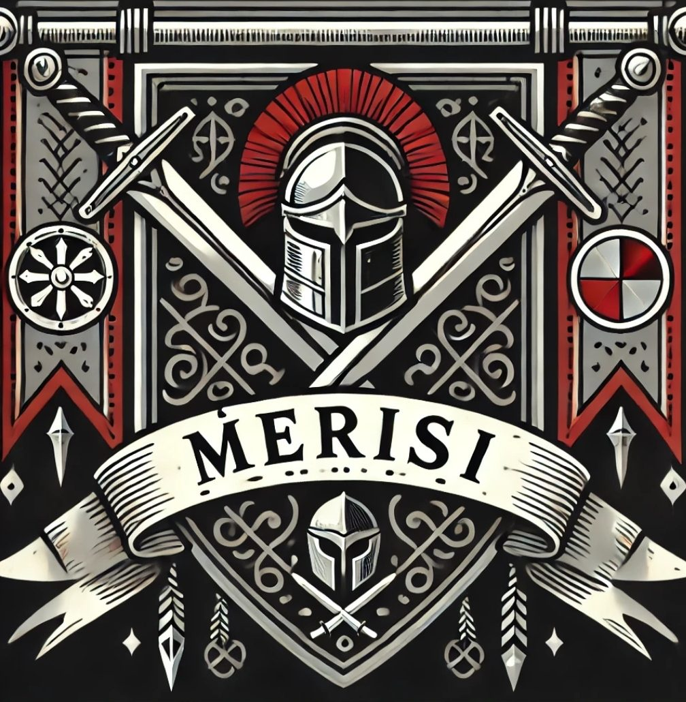

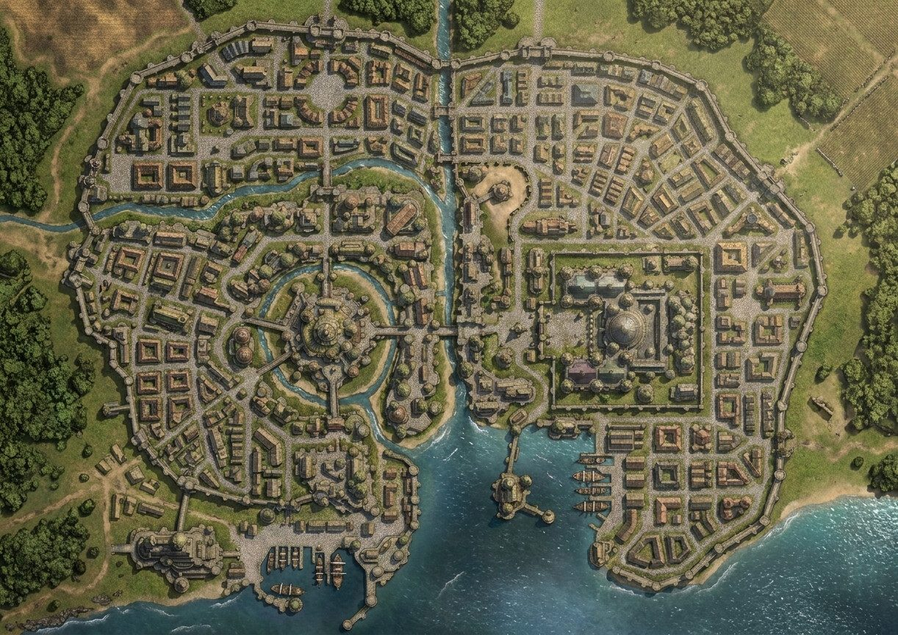
Mieronir: Capital Merisi (older name, Mieron) - population 6000 + 2500.
Ruled by the Taroc warlord Alac Geoffryn. He is a relative to the king and is trusted with the defence of the kingdom from the Araxi, Trolls and other evils from the west. Alac is a man of honour and bravery. He never shies away from any challenge or opposition.
Mieronir is the least taxed of the districts. It spends most of its resources on the army.
Mieronir has the flotilla of the kingdom. It is used to set troops ashore in the west to weaken the enemy. The pirates never do "business" in the waters around Merisi.
Along the bordering river to the Araxi forest, there are castles and keeps kept by Taroc Lords of lands.
Villages, keeps and hamlets
Beyond the six district capitals, these lesser settlements are mapped:
- Amaronir: Tsenkir, Tiárn, Canarestá, Lientros, Lienthaer
- Rauinir: Soraeq, Áhecelin, Keron, Molthaki, Orethali, Caer Ilias
- Aleresir: Anae Asthir, Tol Paras
- Feronir: Phenaihír, Éltasohr, Saethor, Bish Nathir, Skorinae
- Calaronir: Meltaki, Tzierengit, Arthidor, Laer Alghir, Clifton
- Mieronir: Élein, Élsor, Leshaethi, Ijantor
Humans outside the kingdom
There are some groups of humans living outside the kingdom - some small groups of settlers, religious people or adventures here and there and the pirates.
The pirates are noted for their occasional plunders along the kingdom coast. They actually seldom rob humans. When they do, they board ships just off the coast of the kingdom and steals their cargo. They are more in to plundering the dwarves. The dwarves are rich, and the pirates sell the dwarven jewellery and weaponry to the humans. They go ashore close to some dwarven village and sneak in by night and steal whatever they can lay their hands on. The pirate chief is a former general of the kingdom. He rebelled against the Commander of the army.
The dwarves

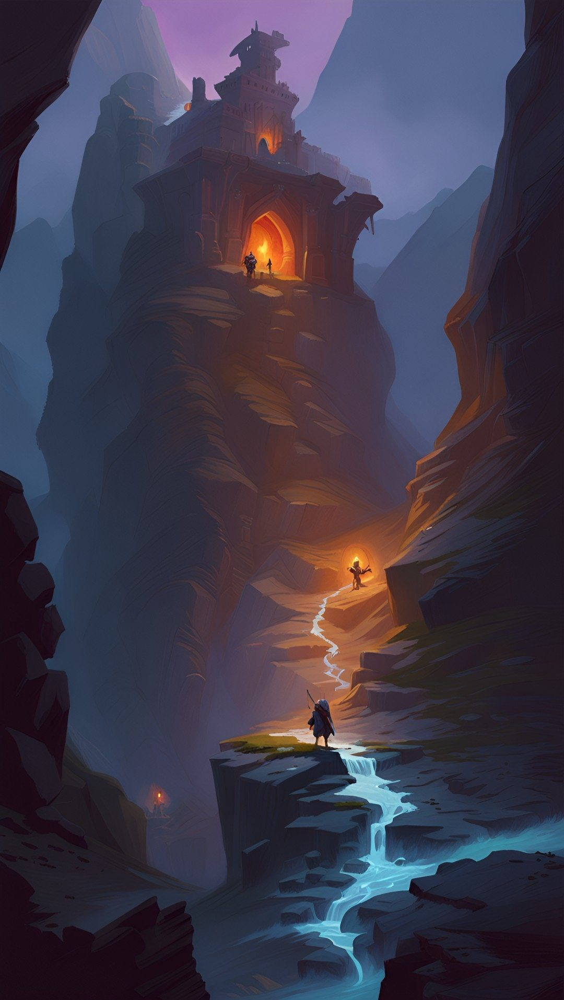

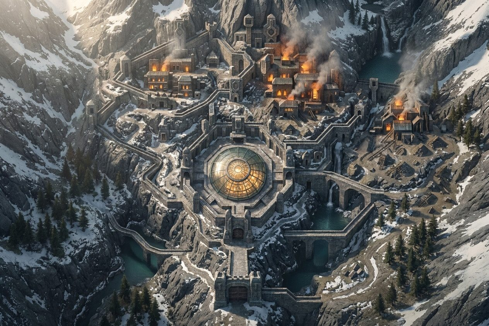
Man Peggon once had a child with Anashina, the goddess of nature. His name is Mon Saran. A giant like his father, but much less mature in thought and action. His father and Mestronorpha have been in several battles over the year. One day Man Peggon was injured and got a scar on his left chin. At that time, Mon Saran was just growing up to become an adult. He wanted to prove himself to his father and challenged Mestronorpha with an army of followers. Mon Saran had handpicked warriors among his human followers. And they were all marching towards Mestronorpha’s castle in Hell. But Mon Saran was no match to the Dark Overlord. He looked at them with half an eye closed and cursed the whole lot. They were shrunk to almost half-human size. Mon Saran was 3 meters tall. Now he was only 1.30. He realised he could not take on the Devil as a dwarf and retreated.
The human warriors became what we know as dwarves today. Mon Saran adopted a new name, Barg, and became the god of the dwarves.
The dwarves are sturdy, if not tall. They are strong and excellent warriors. They worship both Barg and Alesia, the goddess of the earth. This gives them strength and the skill with which to mine the earth and mountains. They were given an intense fear of heights as part of their curse. This is why they bury deep down into the mountains. They are very knowledgeable in minerals and metals. Their metal working skills have no match and they make some of the best weapons that are made outside the realms of the Gods.
Long since, upon discovering their skills in mining and with minerals, the dwarves became very greedy and stingy. They are hard bargainers and never give anything for free.
The dwarves hates the Araxi. They hate the trolls even more intensely. The trolls are thought to be the very opposite of the dwarves, a sort of anti-dwarf. They instinctually hate each other.
The dwarves are very sceptical to the humans. They know by experience what humans can do. Dwarves look upon humans as unstable and frail creatures, selfish and with a constant lust for power. They are especially weary of the magickal powers of the humans. In fact, they are sceptical to any magick not employed by them. Dwarves use limited earth magick that they derive from Alesia.
Their trading with the humans are made with a cool and distant attitude. They remain sceptical but they make profit on the trading.
The dwarves are a stable race. They are never impulsive or vacillating. They keep with their firm course, they hate to much change. To them, faeries represent the unknown and impulsive. They therefore keep their distance to these fay and unstable creatures.
The dwarven King, Gorm lives in their capital Borgheim. He is an old and wise dwarf. He is very loyal and protective of his kingdom and his people and will go to any extent to stop an enemy. He has seen much cruelty by the Araxi and even humans in his times. He still retains his sense of diplomacy even so.
The trolls and the Araxi

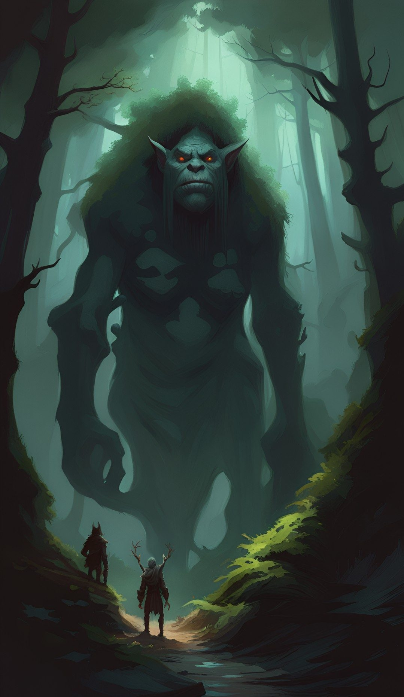
The rulers of the central forests are the Trolls. Huge, ugly and ever so powerful, they thrive on hate and love to harass the Araxi. They are fearsome creatures and humans are well advised never to strike blades with any troll. Trolls are lone creatures and seldom live in groups of more than five. Often they live in a cave by themselves with a hundred or more Araxi in the nearby forests. These Araxi are kept close to the troll by terror. Whenever the troll discovers that an Arax has escaped, it immediately tortures or kills its friends and family. And the trolls have very keen senses.
There are five trolls that are bigger and more powerful than the others. These are referred to as Grand Chieftains. They each have their own territories, and they harass even other trolls.
The Araxi gather together in packs, whether they are slaves to a troll or not. Many of the evil creatures are not under the slavery of any troll. These packs of roam the forests and do mayhem. Sometimes they cross the kingdom border and kill some humans. Mostly they run into the soldiers at the border and fights ensue.
The Araxi are into hating everything. The only reason they do not kill each other is the convenience of staying in packs against other enemies.
The faeries

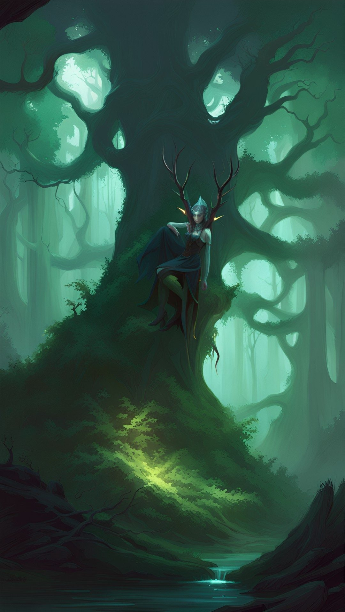
The fay people are mostly on the western forests. They are however to be sporadically found just about everywhere else - where they are not unduly disturbed. Some faeries like the company of humans and tend to live near villages or other small human settlings.
The faeries are a curious set of creatures. There are many races within the faeries such as Elves, Brownies, Pixies, Leprechauns, forest spirits, Kelpies, water spirits, Brollochans and many more. The common denominator is that they all come from the Otherworld.
The Otherworld is another, separate world entirely. Anashina created this world with the help of the elements. The Otherworld is therefore more dominated by nature and it is purer than our world. It was created as a sort of model world, without to much influence by other gods or goddesses.
Anashina once found a way to cheat death, she cut Kraagh's cycle of birth-life-death-birth for her worshippers. It was her gift to them for helping her protect nature. But Kraagh just happened to discover her cheating, although not soon enough to avoid it. He did however manage to throw a curve in her plan: he killed the feelings and creativity of her worshipers. This explains many of the more troubling sides of faeries.
When Anashina worshippers die, they may go to the Otherworld and become faeries. They can then cross over into our world again - as faeries.
Faeries are normally not interested in human affairs. They are not considered good, nor evil. They are somewhat careless regarding human lives. They are antipathetic to the trolls and araxi, and they do not have to much sympathy towards the dwarves - they are all to boring and set. The dwarves are no fun.
Faeries are into fun. They usually live fun lives, even though their fun are not at all funny to humans at times - remember they do not have feelings. They like to do all kinds of practical jokes and fun experiments. This may have serious adverse effects. But treated with the right attitude, faeries can be helpful and nice to humans as well.
They love art and look up to humans for their creativity. They often mimic human creations - songs, poetry, and sculptures.
Elves
Elves are faeries. They look like humans, only somewhat shorter and slimmer. They have pointed ears, larger catlike eyes, fair skin and blond hair. They live in the faerie forests and seldom mingle with humans. They are not very communicative. This is possibly because they look down upon humans, thinking they are inferior and ignorant. Elves in contrast are wise, very spiritual, and they possess innate magick abilities. Extremely skilled hunters, they have very keen senses and are expert archers. They are Anashina’s favourite race.
The seas
There are many sea creatures just off the shore of Amar. Small and large, some poses problems to fishermen and other boats. This is one of the reasons why areas outside the kingdom have never been fully mapped. It is however suspected that Amar is on an island.
There are rumours of merefolks living on islands of the East Coast.
Origo, the ancient Dragon

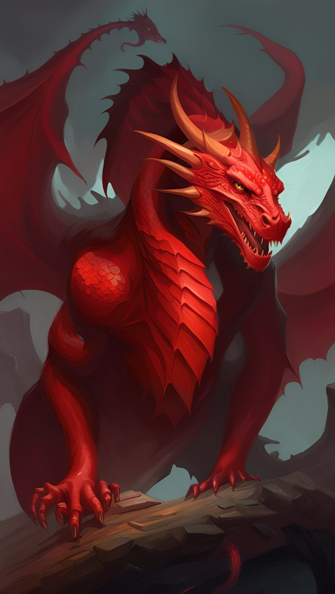
In the mountain north west of the kingdom lives Origo, an ancient Dragon. He is a very selfish creature, obsessed with the collecting of treasure and magick. There are no other dragons here. None that will try taking any of his treasure. There are the wyverns, though, but they seldom dare to challenge the grand dragon.
Origo have no respect for other creatures. He can easily breathe his deadly fire on curious adventures without giving it a second thought.
The wyverns in the north
The seven wyverns in the mountains east of Origo’s are quite active and poses a threat to both trolls and Araxi.
Wyverns are sort of minor dragons. They are obsessive collectors of treasure just as their bigger cousins. This is why they present a threat to their environment. They also fight amongst each other.
Other creatures in other places
There are many creatures lurking around on Amar. Travellers may encounter demons that have escaped the old dwarven mines and other magickal creatures. Inside the kingdom, the roads are fairly safe to travel - especially around the capital and towards Rauinor.
Special places
There are many special and magickal places on Amar. Those mentioned below does in no way comprise all the wonders.
The old dwarven caves
Between the kingdom of Amar and the dwarves lies what is known as the old dwarven caves. No one knows why he or she exists or why he or she is infested with evil. The dwarves are quite secretive about their existence. Demons and creatures of chaos inhabit the caves. Some have crawled up to the surface and challenged warriors, humans and dwarves. The caves have become a sort of no-mans territory. The dwarves bear no claim to the old caves any more. The humans generally leave them alone.
There is still a good reason to adventure down into these old mines: the lost dwarven treasures. Daring adventurers have retrieved several high quality jewellery and magickal items such as weapons. It is popular belief that much treasure is still to be found. For those who are willing to risk their lives.
The dark woods
South, between the troll forest and the faerie woods, there is an area known as the "dark woods". This is truly an evil place, haunted by evil spirits and corrupted faeries. Witches frequent the woods ever so often. Black magick is rampant and the trees themselves are oozing of evil. Few humans know exactly where the dark woods are, even fewer dare to visit the place.
The magick ring
There are many special and magick sites within the faerie woods to the west of Amar. The place known as the magick ring is legendary. In the year 102, only 21 years after he was elected as Amar’s first new King, an unknown deadly disease struck Larighan’s son Rigarian. The prince was almost dead when the royal court magician came up with a solution: The magick ring. Just inside the faerie woods is a ring of oak trees. It is clearly magickal to anyone who visits the aerie site. The court magician had seen the place in his dreams and the god of dreams pointed it out as the prince’s last chance.
The King and his son along with a score of followers travelled to the Magick ring. The spirits of the trees listened to the Kings prayer for his sons life. They gave the prince his life in return for a favour. The legend doesn’t say what the King had to do in exchange. The spirit of the oak trees is not easily figured out. A visit like that is likely to go either way, good or bad.
The dead marsh
South of the Araxi forest lies a very sinister place indeed. It is called the dead marsh. Many years ago, a necromancer and his small army of undeads were travelling to the dark woods. Arachan, as his name was, was wanted by the King for several murders. He had killed strong and healthy men and turned them into undeads. The Kings scouts had intercepted the necromancers travel plans. The King immediately ordered an ambush to be made north of the southwest mountains.
The battle was fierce and deadly, to both sides. Arachans powers were greater than the King’s men had foreseen. Few on either side survived the encounter. In the turn of the battle, much magick was used, especially by the dark necromancer. He turned the area into a swamp, making it harder for the King’s soldiers to move. His undeads were slow movers anyway, so this evened the score.
As the battle died out with the participants, silence covered the marsh. It became the silent graveyard for all those who died.
But undeads don’t die. They just cease to function. And some even regenerate and start to function again after a week or so. The necromancers magick was so strong that anyone who died there was turned into a zombie or worse. This curse is still very much in effect in the dead marsh.
The Circle’s tower
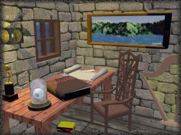
There is not really much to say about the Magick Circle’s tower. Except that no-one dares approach it. Its magick nature inspires fear into anyone daring to go near it.
The tower has a peculiar look, as the third floor seems to sort of vanish into thin air. This is because most of the third floor and all of the forth are made invisible by magick. It is even made invulnerable from any outside attack.
The water maze
Just off the south coast, lies a small island. It is easily seen if you stand on Amar looking out over the waters. It is more difficult to get out there. The waves are big and the undercurrents strong.
On the other side of this island is an entrance. It leads into a big maze. It is filled with water, so an adventurer must enter by boat. But with the waves splashing against the cliffs...
Inside the maze lives a female water dragon. She is not very large, but fearsome never the less. She settled here about 100 years ago. Aia, as her name is, likes the maze and because of the dangers it provides any visitors, she is seldom disturbed. She likes to sleep as she is quite lazy. She possesses a wide variety of magick water abilities, but she is to lazy to make any productive use of them. Aia just wants to be left alone, dreaming.
Places within the kingdom
There are of course many, many places of interest within the kingdom itself. There exist many magickal shrines, ponds, fountains, special holy grounds, faerie trees and other strange and mystical sites. Most of them have only a local reputation. Some are known by travellers and wise men all over the kingdom. The sites described below are but a small sample of well-known sites.
The Eliminator
Underneath the royal castle, there is a maze designed to pick the Kings followers. It's entrance is by the Colliseum (the Recolar arena). It is called the Eliminator. This ultimate challenge was designed a long time ago - when the castle was built. It is still in use today. Once every year on Taroc’s day, brave warriors, thieves or magicians travel to participate in the great elimination. They enter the doors leading down beneath the castle. Few ever come out on the other side. For every ten that enters, one come out. What happens to the other nine are not known. There exist vivid imaginations as to their fate, though.
Those who do survive this ultimate test, automatically become nobles. They gain the title of Lord (or Lady). Those who are already a noble gain a rank or more territory. They also get to keep whatever treasure they collect on their way through the maze. Much of the treasure is a leftover from previous contenders.
The giant footprint
There is a large footprint on the south east shore. It is almost one meter long. Several legends exist as to what or who made it. Some say it is a giant who made it. Others say it was a water demon. Some believe it was the god of strength.
The challenge ground
Just outside the capital is an open place known as the "challenge ground". It is a sort of arena with two circles, 3 meters wide and 10 meters apart. Once every year (on Spell magick day), wizards can challenge each other for a duel on the arena. The rules are quite simple: The two wizards enter a circle each. The one that is forced out of his circle or dies looses. The game can be more lethal if the two contenders decide to. Then a deathward is cast on the circle perimeters. If a wizard then is forced out of his ring, he dies as he crosses it.
The round hill
In the middle of the kingdom there is a big, hemisphere of a polished rock. It is about 12 meters wide and of course 12 meters high. Anyone, who sits on top of it, meditating will feel a complete relaxation and peace of mind.
The Rift
Probably the most special inn on Amar is "The Rift". It is located in the capital. Many adventurers and special personalities frequent this inn. The food is very good, but there are no rooms for accommodations. The service is excellent for the regular customers. For any newcomers, it will seem as if there exist a sort of membership you would need to get in order to get the good service. A newcomer would have to prove himself worthy as a regular customer before the staff and many of the regulars will talk to him.
Sharina runs the inn. She is 32, a warrior that has bested the Eliminator, scarred but still a beauty, fights with a Great Sword or two Broad Axes or a Bastard Sword and Kite Shield, and with Throwing Axes as distance weapons. She is courteous and service minded but strict and takes no bullshit. She is known to throw out drunkards and rude people, especially sexist men. She is high up in the Recolar cult.
The Magick Cauldron
Another special inn of the capital. Many would-be magicians frequent this place. Those who visit the place show many parlour tricks. A lucky guest may pick up a trick or two or even get to know a real magician.
The Oracle of Varni
This is a pond with a tree in the middle of it. The tree is known to be occupied by a wise spirit. For a certain exchange, the spirit may guide a person in the right directions in life. The spirit will answer questions with "yes" or "no" by moving floating twigs in formations. The pond is located somewhere south east of Amaron.
Personalities of Amar
The number of interesting personalities on Amar can hardly be counted. Many local personalities give special flavour to their homesteads. Some travel around the kingdom or even outside and some are known by many of Amar’s inhabitants. A sample of well-known persons apart from those already mentioned follows.
Zarin the travelling alchemist
Zarin is a nice helping hand for those in need. He has a funny habit of appearing in the middle of nowhere with his arsenal of useful potions. He is a merchant dealing in magick potions. Some, like healing potions and poison antidotes, he makes himself. Others like Magical Aptitude raising potions or levitation potions are items he buys from various sources.
His prices are normal and he can’t be bargained, ever.
Naraghin and his magick shop
Naraghin is a Wizard of the Magic path who owns a shop in the capital. Here he sells certain magick items for a very stiff price. Other magicians come to his shop and trades spells and items with him. Naraghin is a nice man with a very short attention span. He has very short memory and only remembers his closest friends. Sometimes he never the less wakes up of his daze and remembers some strange little fact about someone, only to fall back in a dispersed state of mind again.
The Wayanah-party
This is a party of high adventurers. They travel all over in search of mystic places an treasure.
Wayanah is a warrior-sorceress. She wields a sword better than most men and employs Earth magick to overcome her enemies. She travels together with two other women and two men:
Hina is a very strong woman warrior. With a heavy mace and cuirbolli armour, she is a match for any brave man.
Mizamir is an archeress. With keen senses and the calmness of a still pond, she can easily hit a running rabbit at 30 meters.
Boran The Bold is a huge fellow. With bulging muscles, he outweighs most men. His intelligence is however not up to many a quiz. He is a warrior using a Hercules club in battle.
Lagioracharan is the party’s scout. He has very keen vision and hearing, is a good trapper and is essential to the party’s food supply.
Three playful wizards
Three magick towers stands tall inn the central area of the kingdom. They stand only 100 meters apart. Each tower is owned by a wizard. These three wizards are very good friends, they are three playful old magicians.
Povi is an Air and Magic wizard. A funny old, long haired and beared man.
Ferro is a wild Fire and Magic wizard. He usually has burnt hair and covered by sot.
Manir is a Life and Magic wizard. He has the ability to transform himself into a variety of animals and creatures.
These wizards habitually plays practical jokes on each other, from one tower to the other. Sometimes it can be quite a spectacle to view them challenging each other.
The Guards
A party of five adventurers travels around and hires themselves out as protectors - of people or goods. They are known to be very arduous in the tasks they are hired for. They all are excellent horsemen.
Kator is the spokesman for the party. He is a brave knight in a chain mail wielding a sword and a shield. He is elegant as a noble and wants to brave the Eliminator to gain nobility.
Eris is the wife of Kator. She is an Anashina priestess with a big heart. She has much empathy, not only for animals and faeries, but for people and dwarves as well.
Vinar was a royal ranger of the King’s forests just south of the capital. After falling in love with Anisi (who was with this party but has been lost since one year), he joined the group.
Orach is a sturdy warrior with a halberd as a weapon.
Yaloosi is a Life and Protection wizard. He is full of humour and joy and loves all kind of games.
Ran-Asar and Ayah
Ran-Asar and Ayah and the puma Mira have travelled together for some years. The two lovers are always seen in each other’s company. They are well respected at the Rift, but no one knows what their agenda is. They seem to always be on some kind of mission for something.
Ran-Asar wears leather and cuirbolli and fights with a two-handed spear. He is a good archer as well and quite adept in most physical skills.
Ayah is a Life and Protection sorceress. She also know how to defend herself with her staff. She is the owner of Mira.
Mira is intelligent for a Puma. She is totally loyal to Ayah and will defend her with her own life. She looks suspicious at anyone who speaks to Ayah. She will instantly attack someone who were openly aggressive towards her master.
End notes

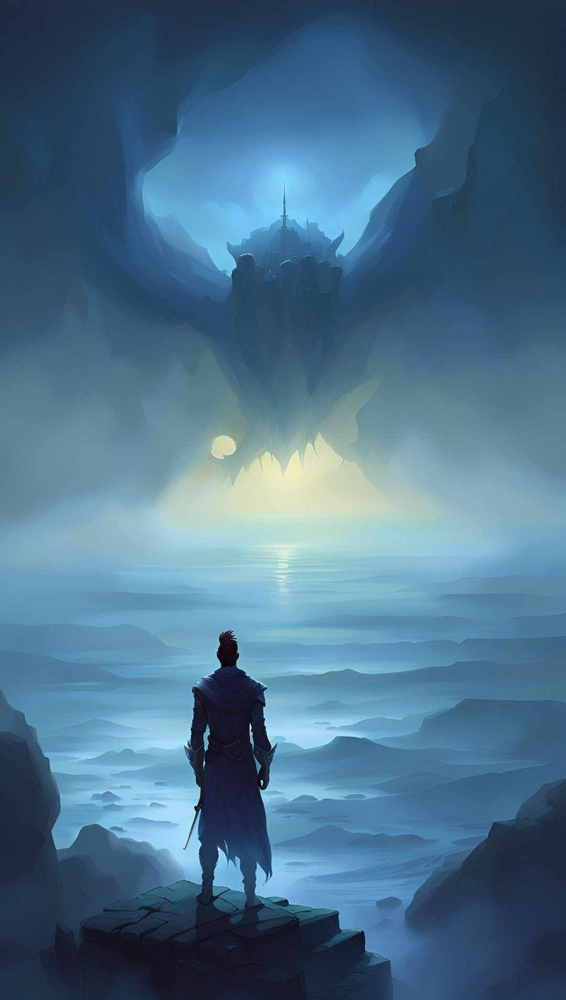
This concludes the overview of the kingdom of Amar, its internal affairs and how it relates to the surrounding areas. There is of course much more to be known. Through experience you will uncover more, perhaps even the most sinister secrets of this kingdom trapped by the fog.